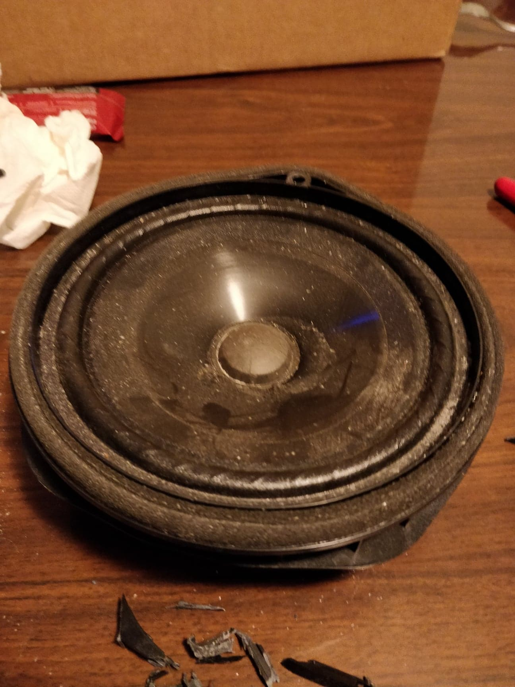
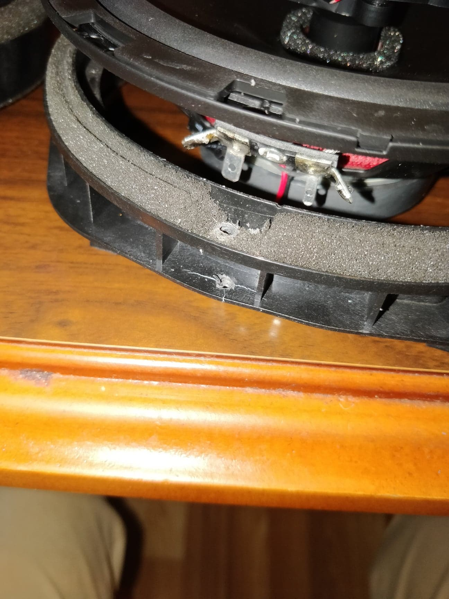
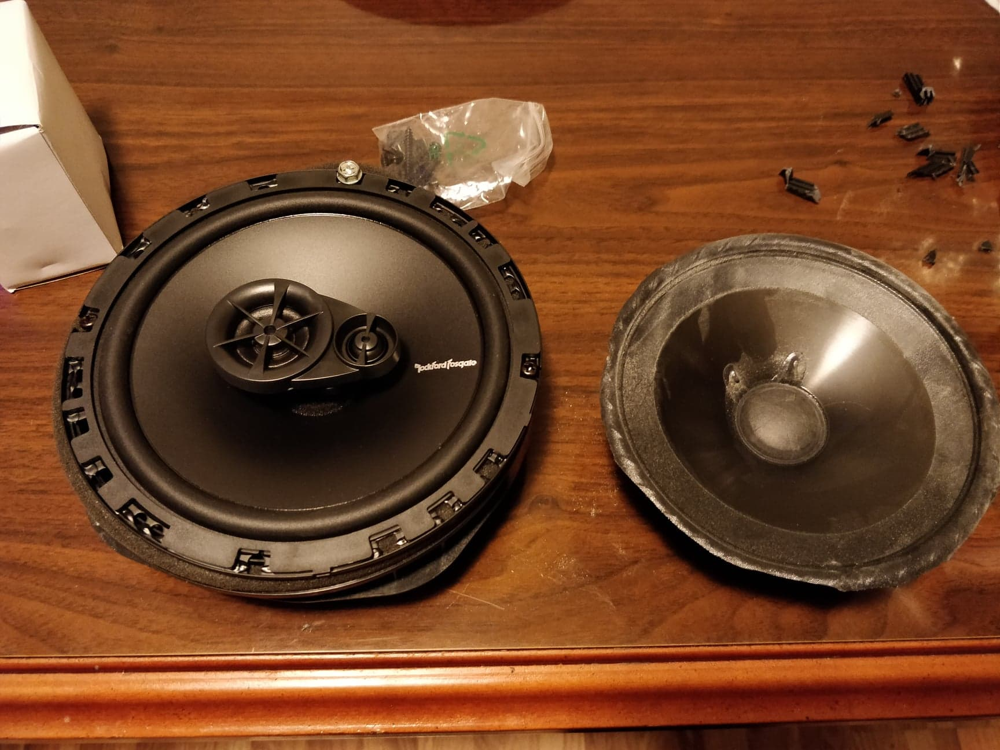
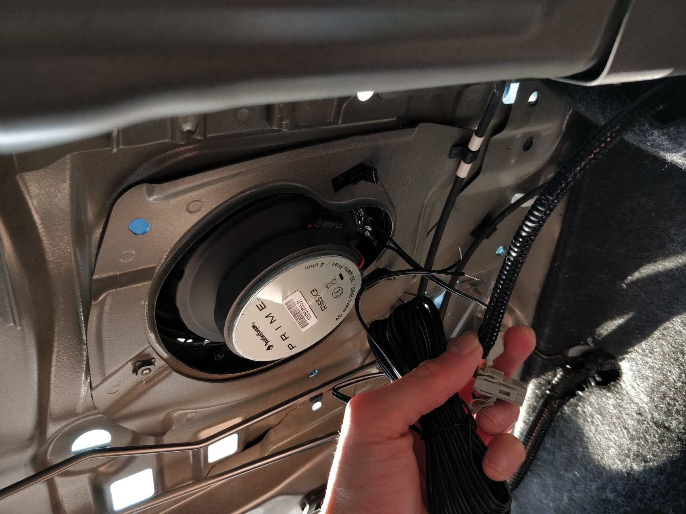

Interests
Music
The main instruments I play are electric guitar, acoustic guitar, and bass guitar.

I have an experience singing in choir, and playing piano, violin, percussion, and harmonica. I consider myself a bit of an audiophile; so besides having highest quality music format and very decent headphones, I just recently did this to my car:
   
Movies
Mainly I love watching seasonal anime series. I'm currently watching Blindspot TV series as well, and I'm a big Marvel fanboy especially when it comes to Spiderman.
Games..?
Although I haven't played any games recently, being a gamer is one of the big reason I love CS. I play Dota 2, and Final Fantasy is my home turf.
Outdoor Activities
I like travelling with friends, working out, swimming, and playing ultimate frisbee!